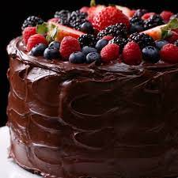
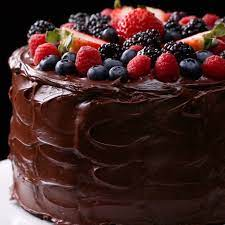

.png)
Chocolate Cake

 

Prep:30 mins
Cook:30 mins
Serves 8
Ingredients
Directions
- Preheat oven to 350 degrees. Grease and flour two 9-inch baking pans (or line with parchment paper circles) and set aside. In the large bowl of a standing mixer, stir together flour, sugar, cocoa, baking soda, and salt. Add eggs, buttermilk, melted butter and vanilla extract and beat until smooth (about 3 minutes). Remove bowl from mixer and stir in hot coffee with a rubber spatula. Batter will be very runny.
- Pour batter evenly between the two pans and bake on middle rack of oven for about 35 minutes, until toothpick inserted in centre comes out clean with just a few moist crumbs attached.
- Allow to cool 15 minutes in pans, then run a butter knife around the edges of each cake. Place a wire cooling rack over top of each pan. Wearing oven mitts, use both hands to hold the racks in place while flipping the cakes over onto the racks. Set the racks down and gently thump on the bottom of the pans until the cakes release. Cool completely before handling or frosting